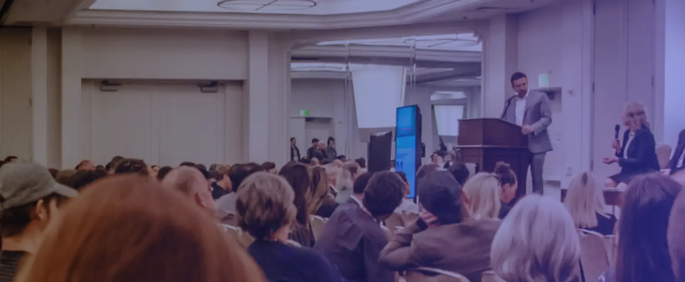
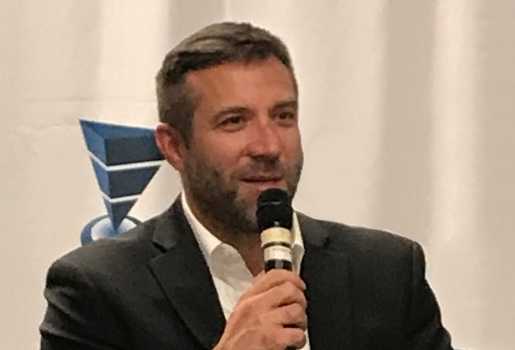
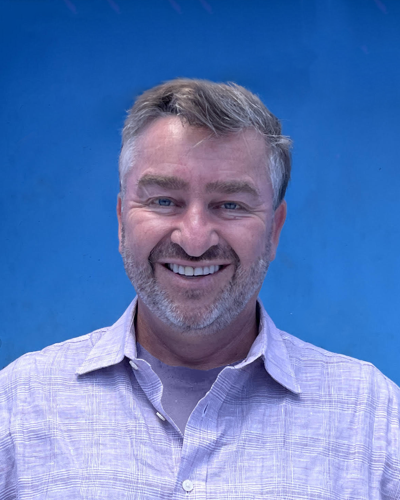
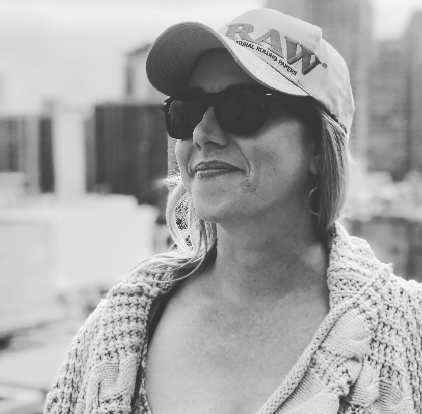

Margins need attention.
The Chamber’s Cannabis Price Wars series examines discounting, customer retention and the pressure on retail profitability. It brings the conversation back to decisions operators can act on.
Introducing our new identity
A shared home for the people building the future of cannabis and hemp.
Discover the next chapterThe Cannabis Chamber of Commerce brings cannabis and hemp professionals together to build relationships that matter to their businesses.
Our new identity gives that work a clearer expression. It represents an operator-led trade association with local roots and a global ambition: to make useful connections easier to find, and easier to build on.
From a first chapter event to a lasting business partnership, the purpose is practical. Help people access the experience, insight and relationships they need to move forward.

For cannabis businesses, opportunity comes with practical questions: how to protect margin, find experienced partners and understand a market that varies by region.
Read the Chamber’s retail researchThe Chamber’s Cannabis Price Wars series examines discounting, customer retention and the pressure on retail profitability. It brings the conversation back to decisions operators can act on.
Each market has its own business conditions. Regional leaders give the network a local point of contact and bring people together around the opportunities in their area.
Cultivators and retailers work alongside service providers, investors and industry partners. The Chamber creates places for those different kinds of expertise to meet.
Three open forms meet around a shared center. Every part keeps its own character.
The new mark expresses the Chamber’s role: bringing different businesses into a shared network. Forest, teal and coral carry those distinct paths; a brass center marks the point of connection.
Across the identity, those paths extend beyond the mark. They become a visible expression of a network that continues from one conversation, chapter and market to the next.
Explore the identityChapters connect the people who know their markets. The wider network opens a conversation with peers beyond them.
Selected regional leaders from the Chamber’s public board directory.
Ian Rassman Regional Chair
Vanessa Fleur Regional Chair
Alex Revich Regional Chair
The Citadel
Urbana Weed Dispensary Oakland
Zoom
Mediterraneo Restaurant
Calendar snapshot: September 23, 2026. Follow each listing for current event details.
The Chamber brings together operators and specialists from across the business. Our leadership connects that experience with the work of building the network.

Board Chair

Executive Vice Chair
Los Angeles Regional Chair
Vice Chair, Marketing

Membership Director
San Diego Regional Chair
Our ambition is a globally connected cannabis industry built on credibility and shared opportunity. That means deepening local participation, making practical knowledge more accessible and helping relationships continue across markets.
This is the direction ahead. New programs and milestones will be announced as they are confirmed.
Explore membershipAdjust the motion, then scroll to compare. Settings save in this browser.